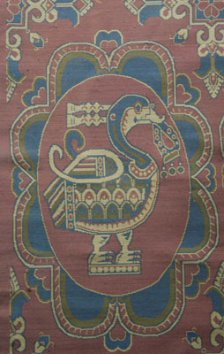
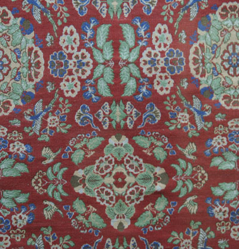
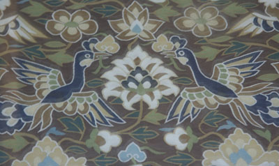

簇四联珠对凤锦
唐（公元618〜907年） 复制件 苏州丝绸博物馆
Silk brocade with phoenixes in pearls
Tang (618—907) reproduction, Suzhou Silk Museum
The brocade with lucky bird design below was also discovered in Dulan.

{kind=link}
花瓣团窠瑞鸟衔绶锦
唐（公元618〜907年） 复制件 苏州丝绸博物馆
Brocade with a lucky bird holding a ribbon and nest of petals
Tang (618—907) reproduction, Suzhou Silk Museum
The brocade below was discovered in Astana, Xinjiang 新疆阿斯塔那 an important archeological site. Astana is located near the historic Silk Road 丝绸之路 city of Turpan 吐鲁番, close to the Mountain of Flames 火焰山. The site was the cemetery for the city during the peak of its prosperity.

{kind=link}
花鸟纹锦
唐（公元618〜907年） 复制件 苏州丝绸博物馆
Brocade with bird and flower design
Tang (618—907) reproduction, Suzhou Silk Museum
Chinese silk tapestry 缂丝 appeared in the Tang and continued to be popular to the end of the Qing. The picture below shows a Chinese silk tapestry artifact from the Song.

{kind=link}
缂丝禁鸾鹊谱
宋（公元960〜1279年） 复制件 苏州丝绸博物馆
Silk tapestry with flowers and birds on purple background
Song (960—1279) reproduction, Suzhou Silk Museum